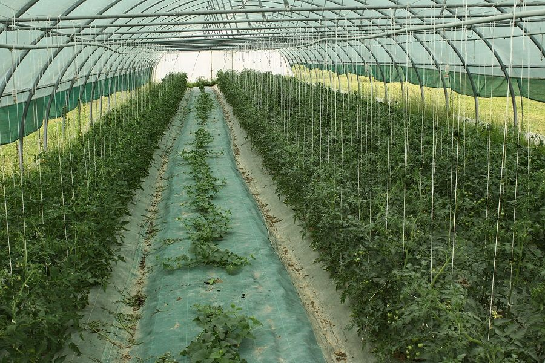

Maraîcher bio depuis 2011
Légumes de saison cultivés avec soin sur 6 hectares de terres limoneuses à Augerans, entre Besançon et Dole.
Voir nos légumesNotre histoire
Installés depuis 2011 au cœur de la Franche-Comté, nous cultivons nos terres limoneuses en agriculture biologique. Nos sols sont amendés exclusivement avec du compost de fumier bovin issu d'une ferme voisine — pas d'engrais chimiques, pas de pesticides.
Chaque saison, nous faisons pousser une large gamme de légumes : tomates, courgettes, courges, carottes, salades, haricots, poireaux et bien d'autres. Nous proposons également des fruits anciens, des fraises et des melons charentais.
Notre engagement est simple : vous offrir des produits vrais, récoltés à maturité, qui ont le goût de ce qu'ils sont.
Nous contacter